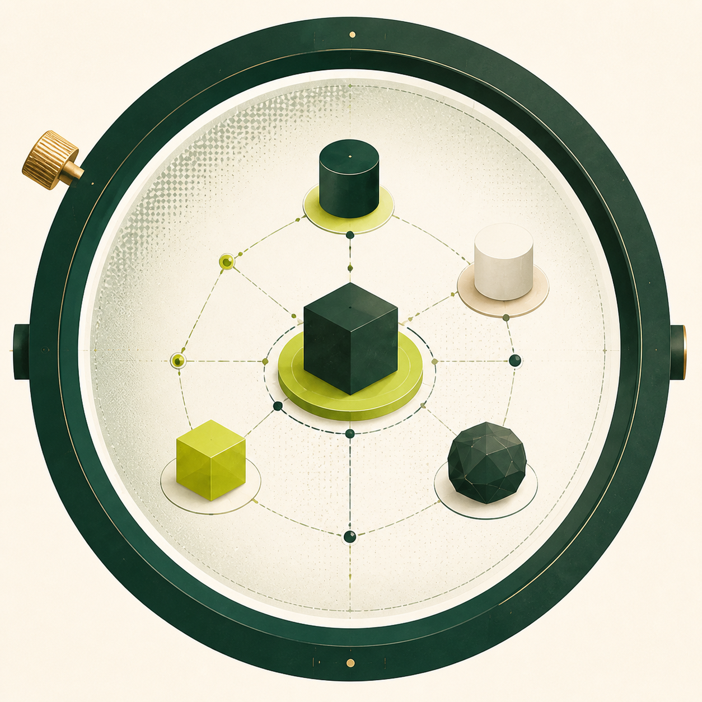

01
ITENSItens públicos por empresa
Volume observado na fonte, em escala comparável.

OBSERVATÓRIO INTELIGÊNCIA DE MERCADO Base local · ago/2026Uma leitura objetiva do portfólio público de distribuidores, com cobertura, qualidade dos dados e produtos potencialmente equivalentes.
Fontes públicas consolidadas em diferentes níveis de detalhe. Compare produto com produto apenas onde a granularidade permite.
Volume observado na fonte, em escala comparável.
Preenchimento de medida e validade do código.
O pareamento disponível cruza Milk e Fortali por embalagem equivalente e proximidade textual. Todo resultado é candidato à revisão humana.
pares candidatos
Carregando análise…
| Produto Milk | Produto Fortali | Embalagem | Similaridade | Confiança |
|---|
O índice ajuda a priorizar investigação; não declara equivalência comercial.
Caixa alta, acentos e pontuação são padronizados. Medidas saem do nome para serem avaliadas separadamente.
Somente produtos com mesma quantidade-base e unidade entram no conjunto de candidatos.
A razão de sequência entre nomes normalizados gera uma pontuação de 0 a 100.
Alta ≥85%; média 70–84%; exploratória 55–69%. Marca, sabor e aplicação ainda precisam ser confirmados.
Catálogos públicos e páginas coletadas no projeto. Milk: catálogo de 14/02/2022. Demais bases: coletas de agosto/2026. Nenhuma fonte continha preço público no recorte consolidado.